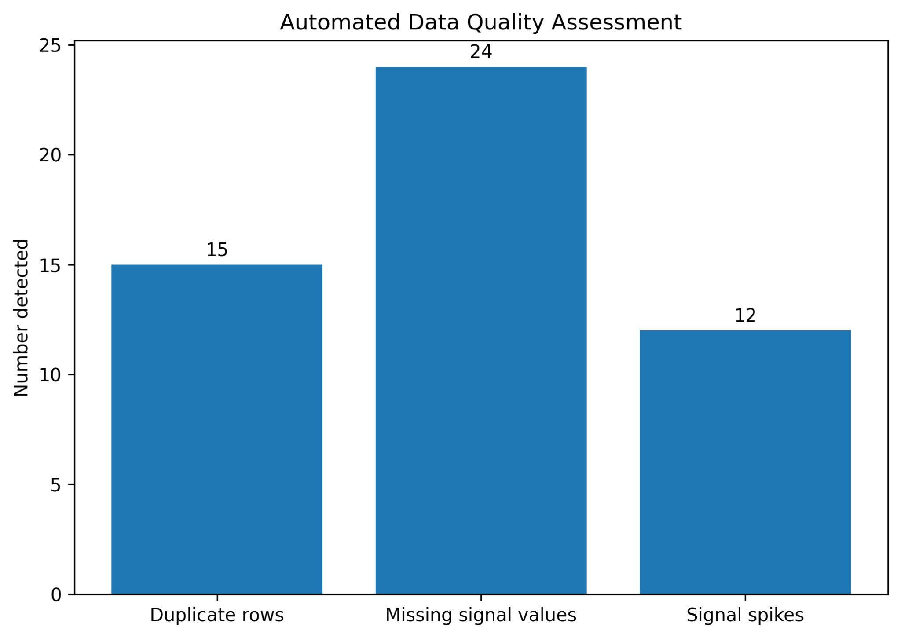
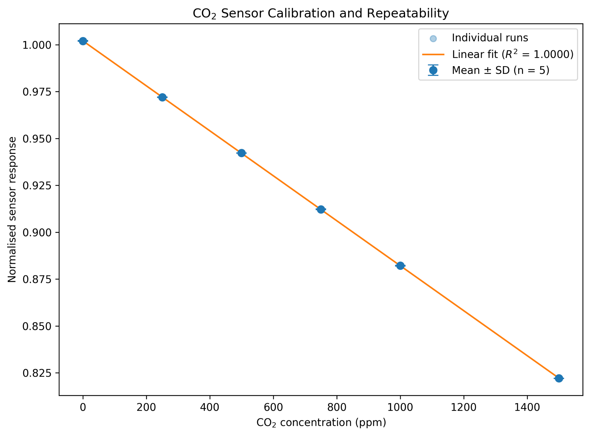

Project 01
Scientific data cleaning and calibration
A synthetic client-style case study showing how I handle inconsistent experimental files, missing data, duplicate rows, anomalous spikes and repeatable calibration analysis.
The problem
Messy experimental data before analysis.
The source files contained inconsistent headers, duplicated rows, missing signal measurements, malformed numeric values and transient spikes. The aim was to build a reusable workflow that cleaned the data without silently altering it.

Raw and cleaned example showing automatically detected signal spikes.
Quality control
Every correction was recorded.
The pipeline standardised schemas, recovered numeric measurements stored as text, removed exact duplicate rows, flagged missing measurements and detected anomalous spikes. Quality-control flags were retained in the final dataset.

Automated quality-control summary across all 30 files.
Result
From cleaned data to a reproducible calibration.
The cleaned measurements were normalised against the reference channel, summarised across repeated runs at each concentration and used to produce a calibration analysis.
Python, pandas, NumPy, Matplotlib, robust outlier detection, batch processing

Calibration and repeatability analysis from the cleaned dataset.